4 神经网络反向传播¶
1 梯度下降¶
学习目标¶
- 知道梯度下降算法
- 知道链式法则
- 掌握反向传播算法
多层神经网络的学习能力比单层网络强得多。想要训练多层网络，需要更强大的学习算法。误差反向传播算法（Back Propagation）是其中最杰出的代表，它是目前最成功的神经网络学习算法。现实任务使用神经网络时，大多是在使用 BP 算法进行训练，值得指出的是 BP 算法不仅可用于多层前馈神经网络，还可以用于其他类型的神经网络。通常说 BP 网络时，一般是指用 BP 算法训练的多层前馈神经网络。
这就需要了解两个概念： 1. 正向传播 2. 反向传播
1 梯度下降算法回顾¶
梯度下降法简单来说就是一种寻找使损失函数最小化的方法。大家在机器学习阶段已经学过该算法，所以我们在这里就简单的回顾下，从数学上的角度来看，梯度的方向是函数增长速度最快的方向，那么梯度的反方向就是函数减少最快的方向，所以有：
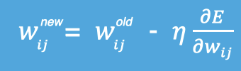
其中，η是学习率，如果学习率太小，那么每次训练之后得到的效果都太小，增大训练的时间成本。如果，学习率太大，那就有可能直接跳过最优解，进入无限的训练中。解决的方法就是，学习率也需要随着训练的进行而变化。

在上图中我们展示了一维和多维的损失函数，损失函数呈碗状。在训练过程中损失函数对权重的偏导数就是损失函数在该位置点的梯度。我们可以看到，沿着负梯度方向移动，就可以到达损失函数底部，从而使损失函数最小化。这种利用损失函数的梯度迭代地寻找局部最小值的过程就是梯度下降的过程。
在进行模型训练时，有三个基础的概念： 1. Epoch: 使用全部数据对模型进行以此完整训练 2. Batch: 使用训练集中的小部分样本对模型权重进行以此反向传播的参数更新 3. Iteration: 使用一个 Batch 数据对模型进行一次参数更新的过程
实际上，梯度下降的几种方式的根本区别就在于 Batch Size不同,，如下表所示：
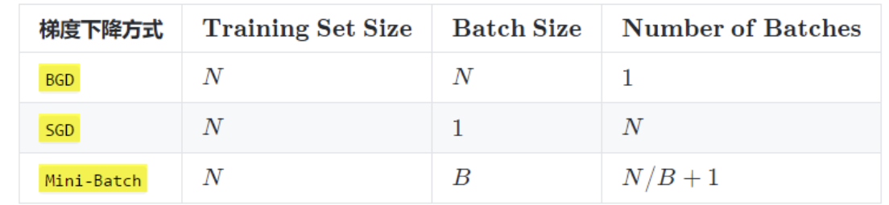
注：上表中 Mini-Batch 的 Batch 个数为 N / B + 1 是针对未整除的情况。整除则是 N / B。
假设数据集有 50000 个训练样本，现在选择 Batch Size = 256 对模型进行训练。
每个 Epoch 要训练的图片数量：50000 训练集具有的 Batch 个数：50000/256+1=196 每个 Epoch 具有的 Iteration 个数：196 10个 Epoch 具有的 Iteration 个数：1960
2 反向传播(BP算法)¶
利用反向传播算法对神经网络进行训练。该方法与梯度下降算法相结合，对网络中所有权重计算损失函数的梯度，并利用梯度值来更新权值以最小化损失函数。在介绍BP算法前，我们先看下前向传播与链式法则的内容。
前向传播指的是数据输入的神经网络中，逐层向前传输，一直到运算到输出层为止。

在网络的训练过程中经过前向传播后得到的最终结果跟训练样本的真实值总是存在一定误差，这个误差便是损失函数。想要减小这个误差，就用损失函数 ERROR，从后往前，依次求各个参数的偏导，这就是反向传播（Back Propagation）。
2.1 反向传播参数更新-流程¶
反向传播算法利用链式法则对神经网络中的各个节点的权重进行更新。我们通过一个例子来给大家介绍整个流程。
输出层权重：
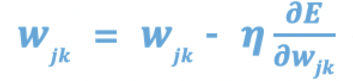
隐藏层权重：
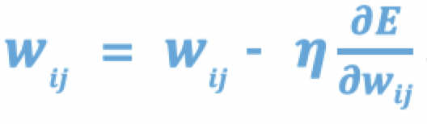
偏置更新：
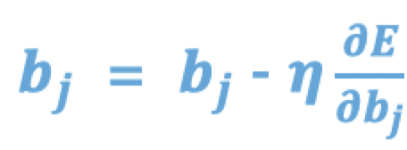
【举个栗子🌰：】
如下图是一个简单的神经网络用来举例：激活函数为sigmoid
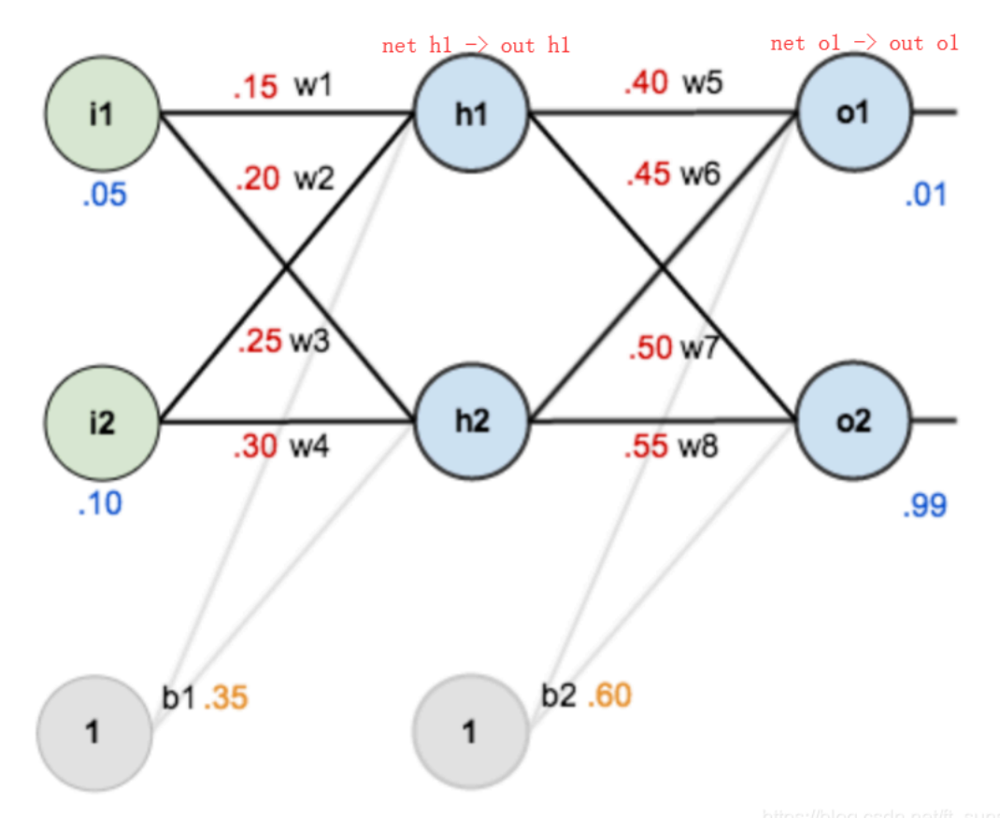
前向传播运算：
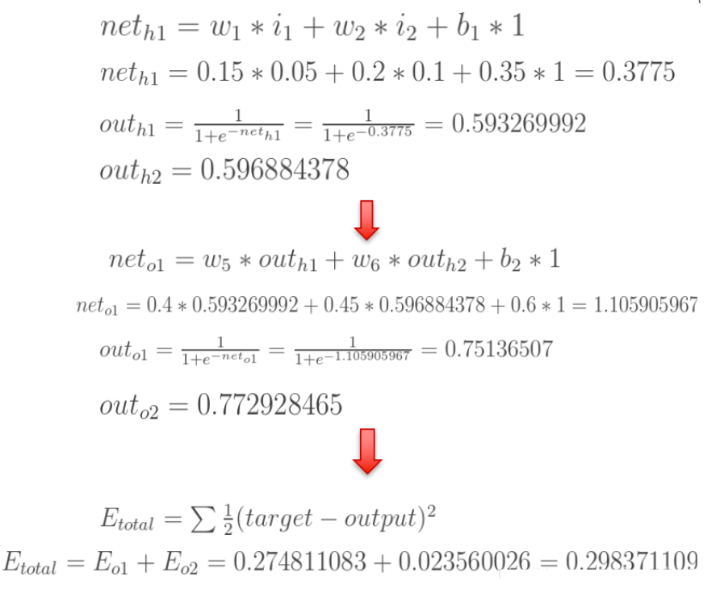
接下来是**反向传播**（求网络误差对各个权重参数的梯度）：
我们先来求最简单的，求误差E对w5的导数。首先明确这是一个“链式法则”的求导过程，要求误差E对w5的导数，需要先求误差E对out o1的导数，再求out o1对net o1的导数，最后再求net o1对w5的导数，经过这个**链式法则**，我们就可以求出误差E对w5的导数（偏导），如下图所示：
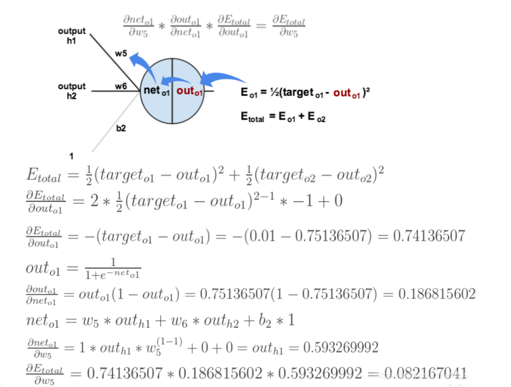
导数（梯度）已经计算出来了，下面就是**反向传播与参数更新过程**：
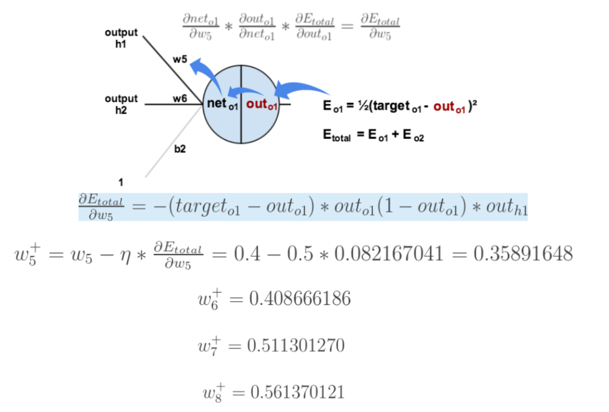
如果要想求**误差E对w1的导数**，误差E对w1的求导路径不止一条，这会稍微复杂一点，但换汤不换药，计算过程如下所示：
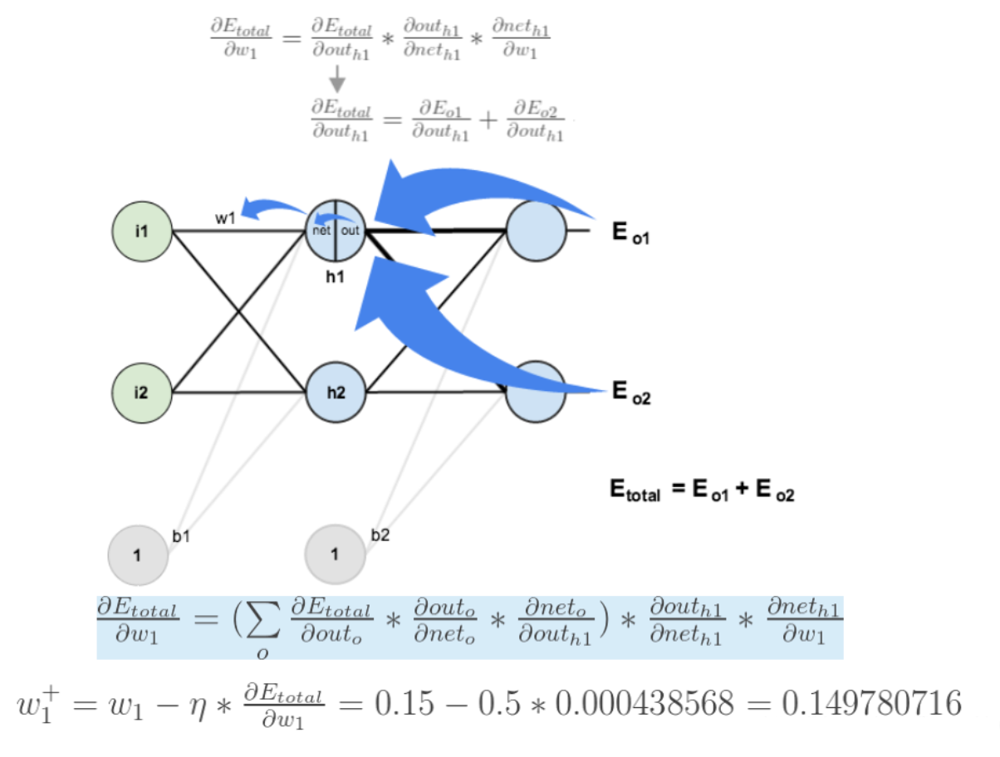
至此，**“反向传播算法”**的过程就讲完了啦！
2.2 反向传播参数更新-代码¶
下面我们使用代码构建上面的网络，并进行一次正向传播和反向传播。
import torch
import torch.nn as nn
import torch.optim as optim
class Net(nn.Module):
def __init__(self):
super(Net, self).__init__()
self.linear1 = nn.Linear(2, 2)
self.linear2 = nn.Linear(2, 2)
# 网络参数初始化
self.linear1.weight.data = torch.tensor([[0.15, 0.20], [0.25, 0.30]])
self.linear2.weight.data = torch.tensor([[0.40, 0.45], [0.50, 0.55]])
self.linear1.bias.data = torch.tensor([0.35, 0.35])
self.linear2.bias.data = torch.tensor([0.60, 0.60])
def forward(self, x):
x = self.linear1(x)
x = torch.sigmoid(x)
x = self.linear2(x)
x = torch.sigmoid(x)
return x
if __name__ == '__main__':
inputs = torch.tensor([[0.05, 0.10]])
target = torch.tensor([[0.01, 0.99]])
# 获得网络输出值
net = Net()
output = net(inputs)
# print(output) # tensor([[0.7514, 0.7729]], grad_fn=<SigmoidBackward>)
# 计算误差
loss = torch.sum((output - target) ** 2) / 2
# print(loss) # tensor(0.2984, grad_fn=<DivBackward0>)
# 优化方法
optimizer = optim.SGD(net.parameters(), lr=0.5)
# 梯度清零
optimizer.zero_grad()
# 反向传播
loss.backward()
# 打印 w5、w7、w1 的梯度值
print(net.linear1.weight.grad.data)
# tensor([[0.0004, 0.0009],
# [0.0005, 0.0010]])
print(net.linear2.weight.grad.data)
# tensor([[ 0.0822, 0.0827],
# [-0.0226, -0.0227]])
# 打印网络参数
optimizer.step()
print(net.state_dict())
# OrderedDict([('linear1.weight', tensor([[0.1498, 0.1996], [0.2498, 0.2995]])),
# ('linear1.bias', tensor([0.3456, 0.3450])),
# ('linear2.weight', tensor([[0.3589, 0.4087], [0.5113, 0.5614]])),
# ('linear2.bias', tensor([0.5308, 0.6190]))])
3 小结¶
本小节主要学习了神经网络中最重要的反向传播(BP)算法，该算法通过链式求导的方法来计算神经网络中的各个权重参数的梯度，从而使用梯度下降算法来更新网络参数。
2 梯度下降-梯度优化方法¶
学习目标¶
- 知道常见优化方法的问题及解决方案
传统的梯度下降优化算法中，可能会碰到以下情况：
碰到平缓区域，梯度值较小，参数优化变慢 碰到 “鞍点” ，梯度为 0，参数无法优化 碰到局部最小值 对于这些问题, 出现了一些对梯度下降算法的优化方法，例如：Momentum、AdaGrad、RMSprop、Adam 等.
1 指数加权平均¶
我们最常见的算数平均指的是将所有数加起来除以数的个数，每个数的权重是相同的。加权平均指的是给每个数赋予不同的权重求得平均数。移动平均数，指的是计算最近邻的 N 个数来获得平均数。
指数移动加权平均则是参考各数值，并且各数值的权重都不同，距离越远的数字对平均数计算的贡献就越小（权重较小），距离越近则对平均数的计算贡献就越大（权重越大）。
比如：明天气温怎么样，和昨天气温有很大关系，而和一个月前的气温关系就小一些。
计算公式可以用下面的式子来表示：
- St 表示指数加权平均值;
- Yt 表示 t 时刻的值;
- β 调节权重系数，该值越大平均数越平缓。
我们接下来通过一段代码来看下结果，我们随机产生进 30 天的气温数据：
import torch
import matplotlib.pyplot as plt
ELEMENT_NUMBER = 30
# 1. 实际平均温度
def test01():
# 固定随机数种子
torch.manual_seed(0)
# 产生30天的随机温度
temperature = torch.randn(size=[ELEMENT_NUMBER,]) * 10
print(temperature)
# 绘制平均温度
days = torch.arange(1, ELEMENT_NUMBER + 1, 1)
plt.plot(days, temperature, color='r')
plt.scatter(days, temperature)
plt.show()
# 2. 指数加权平均温度
def test02(beta=0.9):
# 固定随机数种子
torch.manual_seed(0)
# 产生30天的随机温度
temperature = torch.randn(size=[ELEMENT_NUMBER,]) * 10
print(temperature)
exp_weight_avg = []
for idx, temp in enumerate(temperature, 1):
# 第一个元素的的 EWA 值等于自身
if idx == 1:
exp_weight_avg.append(temp)
continue
# 第二个元素的 EWA 值等于上一个 EWA 乘以 β + 当前气氛乘以 (1-β)
new_temp = exp_weight_avg[idx - 2] * beta + (1 - beta) * temp
exp_weight_avg.append(new_temp)
days = torch.arange(1, ELEMENT_NUMBER + 1, 1)
plt.plot(days, exp_weight_avg, color='r')
plt.scatter(days, temperature)
plt.show()
if __name__ == '__main__':
test01()
test02(0.5)
test02(0.9)
程序结果如下:

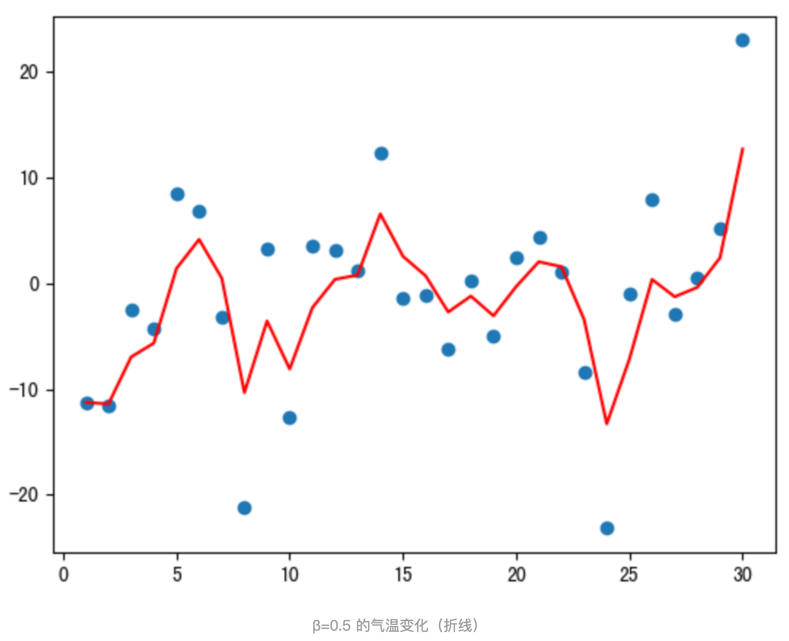
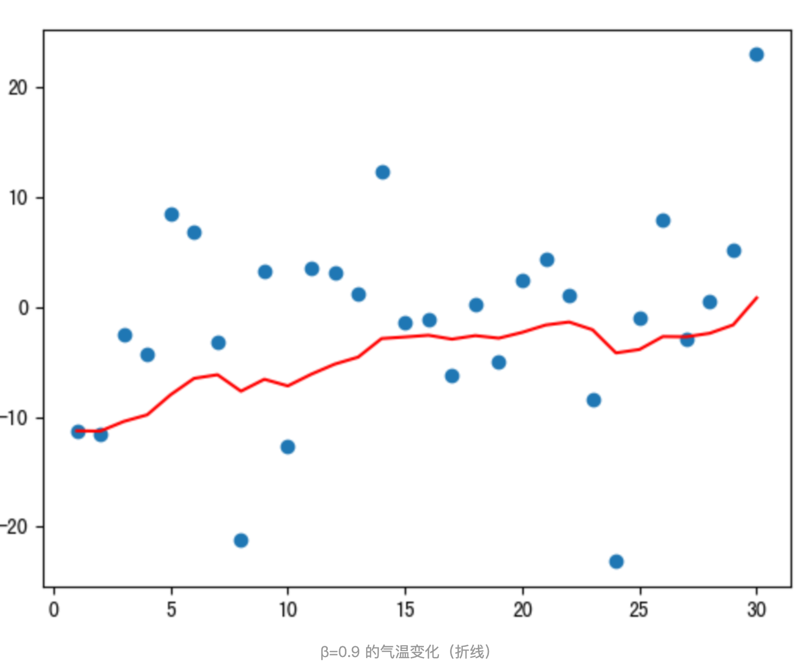
从程序运行结果可以看到：
指数加权平均绘制出的气氛变化曲线更加平缓; β 的值越大，则绘制出的折线越加平缓; β 值一般默认都是 0.9
2 动量算法Momentum¶
当梯度下降碰到 “峡谷” 、”平缓”、”鞍点” 区域时, 参数更新速度变慢. Momentum 通过指数加权平均法，累计历史梯度值，进行参数更新，越近的梯度值对当前参数更新的重要性越大。
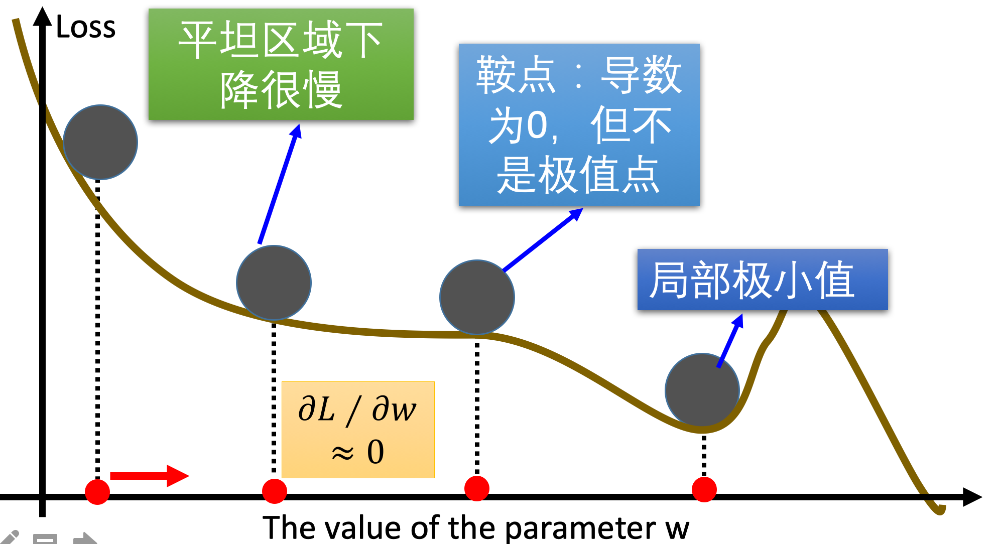
梯度计算公式：Dt = β * St-1 + (1- β) * Dt
- St-1 表示历史梯度移动加权平均值
- wt 表示当前时刻的梯度值
- β 为权重系数
咱们举个例子，假设：权重 β 为 0.9，例如：
第一次梯度值：s1 = d1 = w1 第二次梯度值：s2 = 0.9 * s1 + d2 * 0.1 第三次梯度值：s3 = 0.9 * s2 + d3 * 0.1 第四次梯度值：s4 = 0.9 * s3 + d4 * 0.1
- w 表示初始梯度
- d 表示当前轮数计算出的梯度值
- s 表示历史梯度值
梯度下降公式中梯度的计算，就不再是当前时刻 t 的梯度值，而是历史梯度值的指数移动加权平均值。公式修改为：
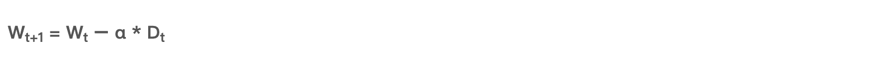
那么，Monmentum 优化方法是如何一定程度上克服 “平缓”、”鞍点”、”峡谷” 的问题呢？
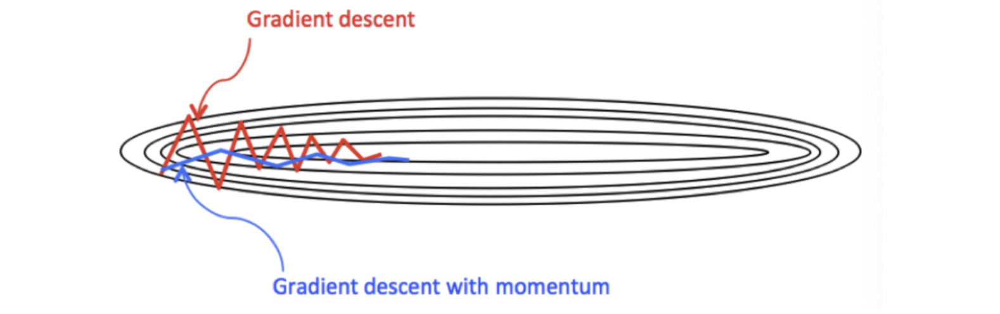
当处于鞍点位置时，由于当前的梯度为 0，参数无法更新。但是 Momentum 动量梯度下降算法已经在先前积累了一些梯度值，很有可能使得跨过鞍点。
由于 mini-batch 普通的梯度下降算法，每次选取少数的样本梯度确定前进方向，可能会出现震荡，使得训练时间变长。Momentum 使用移动加权平均，平滑了梯度的变化，使得前进方向更加平缓，有利于加快训练过程。一定程度上有利于降低 “峡谷” 问题的影响。
峡谷问题：就是会使得参数更新出现剧烈震荡.
Momentum 算法可以理解为是对梯度值的一种调整，我们知道梯度下降算法中还有一个很重要的学习率，Momentum 并没有学习率进行优化。
在pytorch中动量梯度优化法编程实践如下：
def dm02_GradientDescent_opt_Momentum():
# 1 初始化权重参数
w = torch.tensor([1.0], requires_grad=True, dtype=torch.float32)
y = (w ** 2) / 2.0
z = y.sum()
# 2 实例化优化方法：SGD 指定参数beta=0.9
optimizer = torch.optim.SGD([w], lr=0.01, momentum=0.9)
# 3 第1次更新 计算梯度，并对参数进行更新
optimizer.zero_grad()
z.backward()
optimizer.step()
print('第1次: 梯度w.grad: %.10f, 更新后的权重:%.10f' %(w.grad.numpy(), w.detach().numpy()) )
# 4 第2次更新 计算梯度，并对参数进行更新
y = (w ** 2) / 2.0
z = y.sum()
optimizer.zero_grad()
z.backward()
optimizer.step()
print('第2次: 梯度w.grad: %.10f, 更新后的权重:%.10f' % (w.grad.numpy(), w.detach().numpy()) )
结果显示
第1次: 梯度w.grad: 1.0000000000, 更新后的权重:0.9900000095
第2次: 梯度w.grad: 0.9900000095, 更新后的权重:0.9711000323
3 AdaGrad¶
AdaGrad 通过对不同的参数分量使用不同的学习率，AdaGrad 的学习率总体会逐渐减小，这是因为 AdaGrad 认为：在起初时，我们距离最优目标仍较远，可以使用较大的学习率，加快训练速度，随着迭代次数的增加，学习率逐渐下降。
其计算步骤如下：
- 初始化学习率 α、初始化参数 θ、小常数 σ = 1e-6
- 初始化梯度累积变量 s = 0
- 从训练集中采样 m 个样本的小批量，计算梯度 g
- 累积平方梯度 s = s + g ⊙ g，⊙ 表示各个分量相乘
学习率 α 的计算公式如下：
- 参数更新公式如下：
- 重复 2-7 步骤.
AdaGrad 缺点是可能会使得学习率过早、过量的降低，导致模型训练后期学习率太小，较难找到最优解。
在pytorch中AdaGrad优化法编程实践如下：
'''
AdaGrad思想：修正学习率,进行梯度更新
具体方法：累加梯度的平方和，来调整学习率随着训练次数的增加，越来越小
'''
def dm03_GradientDescent_opt_AdaGrad():
# 1 初始化权重参数
w = torch.tensor([1.0], requires_grad=True, dtype=torch.float32)
y = (w ** 2) / 2.0
z = y.sum()
w10 = w
# 2 实例化优化方法：SGD 指定参数beta=0.9
optimizer = optim.Adagrad ([w], lr=0.01)
# 3 第1次更新 计算梯度，并对参数进行更新
optimizer.zero_grad()
z.backward()
optimizer.step()
print('梯度w.grad: %.10f, 更新后的权重:%.10f' % (w.grad.numpy(), w.detach().numpy()))
结果显示
梯度w.grad: 1.0000000000, 更新后的权重:0.9900000095
4 RMSProp¶
RMSProp 优化算法是对 AdaGrad 的优化. 最主要的不同是，其使用指数移动加权平均梯度替换历史梯度的平方和。其计算过程如下：
- 初始化学习率 α、初始化参数 θ、小常数 σ = 1e-6
- 初始化参数 θ
- 初始化梯度累计变量 s
- 从训练集中采样 m 个样本的小批量，计算梯度 g
- 使用指数移动平均累积历史梯度，公式如下：

- 学习率 α 的计算公式如下：

- 参数更新公式如下：

RMSProp 与 AdaGrad 最大的区别是对梯度的累积方式不同，对于每个梯度分量仍然使用不同的学习率。
RMSProp 通过引入衰减系数 β，控制历史梯度对历史梯度信息获取的多少. 被证明在神经网络非凸条件下的优化更好，学习率衰减更加合理一些。
需要注意的是：AdaGrad 和 RMSProp 都是对于不同的参数分量使用不同的学习率，如果某个参数分量的梯度值较大，则对应的学习率就会较小，如果某个参数分量的梯度较小，则对应的学习率就会较大一些
在pytorch中RMSprop梯度优化法，编程实践如下：
'''
1 为什么使用RMSprop
AdaGrad算法在迭代后期由于学习率过小,能较难找到最优解
使用梯度平方的加权平均，来修正学习率
'''
def dm04_GradientDescent_opt_RMSprop():
# 1 初始化权重参数
w = torch.tensor([1.0], requires_grad=True, dtype=torch.float32)
y = (w ** 2) / 2.0
z = y.sum()
w10 = w
# 2 实例化优化方法：SGD 指定参数beta=0.9
optimizer = optim.RMSprop([w], lr=0.01)
# 3 第1次更新 计算梯度，并对参数进行更新
optimizer.zero_grad()
z.backward()
optimizer.step()
print('梯度w.grad: %.10f, 更新后的权重:%.10f' % (w.grad.numpy(), w.detach().numpy()))
结果显示
梯度w.grad: 1.0000000000, 更新后的权重:0.9000000358
5 Adam¶
Momentum 使用指数加权平均计算当前的梯度值、AdaGrad、RMSProp 使用自适应的学习率，Adam 结合了 Momentum、RMSProp 的优点，使用：移动加权平均的梯度和移动加权平均的学习率。使得能够自适应学习率的同时，也能够使用 Momentum 的优点。
在pytroch中，Adam梯度优化法编程实践如下：
'''
Adam优化算法（Adaptive Moment Estimation，自适应矩估计）将 Momentum 和 RMSProp 算法结合在一起。
1.修正梯度: 使⽤梯度 的 指数加权平均
2.修正学习率: 使⽤梯度平⽅ 的 指数加权平均
def dm05_GradientDescent_opt_Adam():
# 1 初始化权重参数
w = torch.tensor([1.0], requires_grad=True, dtype=torch.float32)
y = (w ** 2) / 2.0
z = y.sum()
# 2 实例化优化方法：SGD 指定参数beta=0.9
optimizer = optim.Adam([w], lr=0.01)
# 3 第1次更新 计算梯度，并对参数进行更新
optimizer.zero_grad()
z.backward()
optimizer.step()
print('Adam: 梯度w.grad: %.10f, 更新后的权重:%.10f' % (w.grad.numpy(), w.detach().numpy()))
# 4 第2次更新 计算梯度，并对参数进行更新
y = (w ** 2) / 2.0
z = y.sum()
optimizer.zero_grad()
z.backward()
optimizer.step()
print('Adam2: 梯度w.grad: %.10f, 更新后的权重:%.10f' % (w.grad.numpy(), w.detach().numpy()))
结果显示：
梯度w.grad: 1.0000000000, 更新后的权重:0.9000000358
6 小结¶
本小节主要学习了常见的一些对普通梯度下降算法的优化方法，主要有 Momentum、AdaGrad、RMSProp、Adam 等优化方法，其中 Momentum 使用指数加权平均参考了历史梯度，使得梯度值的变化更加平缓。AdaGrad 则是针对学习率进行了自适应优化，由于其实现可能会导致学习率下降过快，RMSProp 对 AdaGrad 的学习率自适应计算方法进行了优化，Adam 则是综合了 Momentum 和 RMSProp 的优点，在很多场景下，Adam 的表示都很不错。
3 梯度下降-学习率优化策略¶
1 为什么要进行学习率优化¶
在训练神经网络时，一般情况下学习率都会随着训练而变化，这主要是由于，在神经网络训练的后期，如果学习率过高，会造成loss的振荡，但是如果学习率减小的过快，又会造成收敛变慢的情况。
请运行下面代码，观察学习率设置不同对网络训练的影响
# x看成是权重，y看成是loss，下面通过代码来理解学习率的作用
def func(x_t):
return torch.pow(2*x_t, 2) # y = 4 x ^2
# 采用较小的学习率，梯度下降的速度慢
# 采用较大的学习率，梯度下降太快越过了最小值点，导致不收敛，甚至震荡
def dm01_learning_rate():
x = torch.tensor([2.], requires_grad=True)
# 记录loss迭代次数，画曲线
iter_rec, loss_rec, x_rec = list(), list(), list()
# 实验学习率： 0.01 0.02 0.03 0.1 0.2 0.3 0.4
# lr = 0.1 # 正常的梯度下降
# lr = 0.125 # 当学习率设置0.125 一下子求出一个最优解
# x=0 y=0 在x=0处梯度等于0 x的值x=x-lr*x.grad就不用更新了
# 后续再多少次迭代 都固定在最优点
lr = 0.2 # x从2.0一下子跨过0点，到了左侧负数区域
# lr = 0.3 # 梯度越来越大 梯度爆炸
max_iteration = 4
for i in range(max_iteration):
y = func(x) # 得出loss值
y.backward() # 计算x的梯度
print("Iter:{}, X:{:8}, X.grad:{:8}, loss:{:10}".format(
i, x.detach().numpy()[0], x.grad.detach().numpy()[0], y.item()))
x_rec.append(x.item()) # 梯度下降点 列表
# 更新参数
x.data.sub_(lr * x.grad) # x = x - x.grad
x.grad.zero_()
iter_rec.append(i) # 迭代次数 列表
loss_rec.append(y) # 损失值 列表
# 迭代次数-损失值 关系图
plt.subplot(121).plot(iter_rec, loss_rec, '-ro')
plt.grid()
plt.xlabel("Iteration X")
plt.ylabel("Loss value Y")
# 函数曲线-下降轨迹 显示图
x_t = torch.linspace(-3, 3, 100)
y = func(x_t)
plt.subplot(122).plot(x_t.numpy(), y.numpy(), label="y = 4*x^2")
y_rec = [func(torch.tensor(i)).item() for i in x_rec]
print('x_rec--->', x_rec)
print('y_rec--->', y_rec)
# 指定线的颜色和样式（-ro：红色圆圈，b-：蓝色实线等）
plt.subplot(122).plot(x_rec, y_rec, '-ro')
plt.grid()
plt.legend()
plt.show()
运行效果图如下：
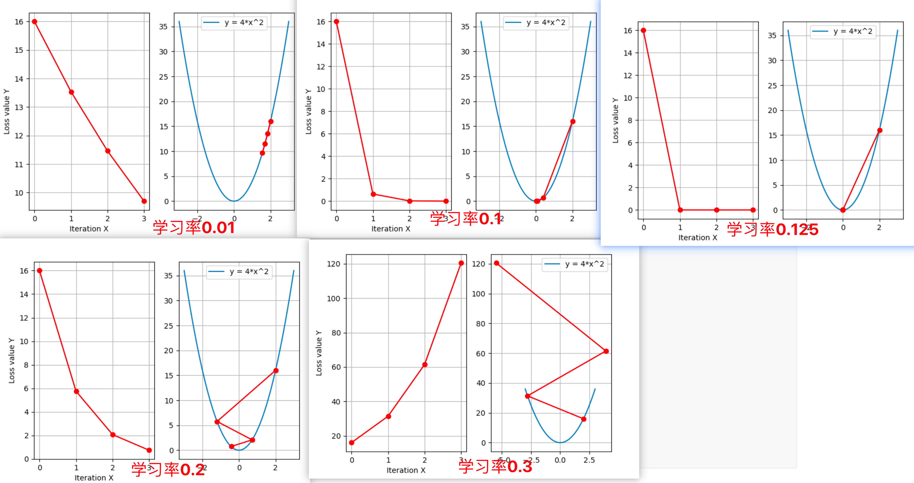
可以看出：采用较小的学习率，梯度下降的速度慢；采用较大的学习率，梯度下降太快越过了最小值点，导致不收敛，甚至震荡。
2 梯度学习率调整策略¶
2.1 等间隔-调整学习率¶
# lr_scheduler.StepLR(optimizer, step_size, gamma=0.1, last_epoch=-1)
# 功能：等间隔-调整学习率
# 参数：
# step_size：调整间隔数
# gamma：调整系数
# 调整方式：lr = lr * gamma
def dm03_test_StepLR():
LR = 0.1 # 设置学习率初始化值为0.1
iteration = 10
max_epoch = 200
weights = torch.randn((1), requires_grad=True)
target = torch.zeros((1))
optimizer = optim.SGD([weights], lr=LR, momentum=0.9)
# 设置学习率下降策略
scheduler_lr = optim.lr_scheduler.StepLR(optimizer, step_size=50, gamma=0.5)
lr_list, epoch_list = list(), list()
for epoch in range(max_epoch):
# 获取当前lr，新版本用 get_last_lr()函数，旧版本用get_lr()函数，具体看UserWarning
lr_list.append(scheduler_lr.get_last_lr())
epoch_list.append(epoch)
for i in range(iteration):
loss = torch.pow((weights - target), 2)
loss.backward()
optimizer.step()
optimizer.zero_grad()
# 更新下一个epoch的学习率
scheduler_lr.step()
print('epoch_list--->', epoch_list)
print('lr_list--->', lr_list)
plt.plot(epoch_list, lr_list, label="Step LR Scheduler")
plt.xlabel("Epoch")
plt.ylabel("Learning rate")
plt.legend()
plt.show()
效果如下：
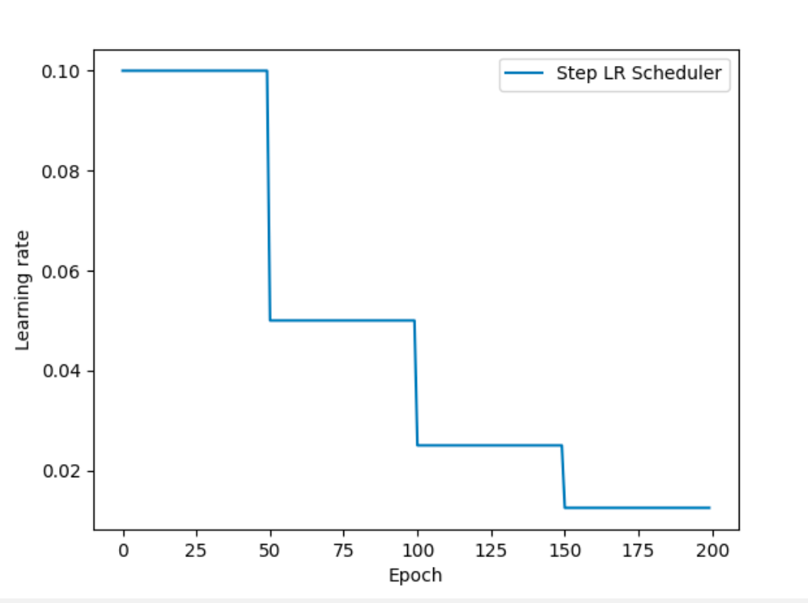
2.2 指定间隔-调整学习率¶
'''
lr_scheduler.MultiStepLR(optimizer, milestones, gamma=0.1, last_epoch=-1)
功能：指定间隔-调整学习率
主要参数：
milestones：设定调整时刻数
gamma：调整系数
调整方式：lr = lr * gamma
'''
def dm04_test_MultiStepLR():
torch.manual_seed(1)
LR = 0.1
iteration = 10
max_epoch = 200
weights = torch.randn((1), requires_grad=True)
target = torch.zeros((1))
print('weights--->', weights, 'target--->', target)
optimizer = optim.SGD([weights], lr=LR, momentum=0.9)
# 设定调整时刻数
milestones = [50, 125, 160]
# 设置学习率下降策略
scheduler_lr = optim.lr_scheduler.MultiStepLR(optimizer, milestones=milestones, gamma=0.5)
lr_list, epoch_list = list(), list()
for epoch in range(max_epoch):
lr_list.append(scheduler_lr.get_last_lr())
epoch_list.append(epoch)
for i in range(iteration):
loss = torch.pow((weights - target), 2)
loss.backward()
optimizer.step()
optimizer.zero_grad()
# 更新下一个epoch的学习率
scheduler_lr.step()
plt.plot(epoch_list, lr_list, label="Multi Step LR Scheduler\nmilestones:{}".format(milestones))
plt.xlabel("Epoch")
plt.ylabel("Learning rate")
plt.legend()
plt.show()
效果如下：
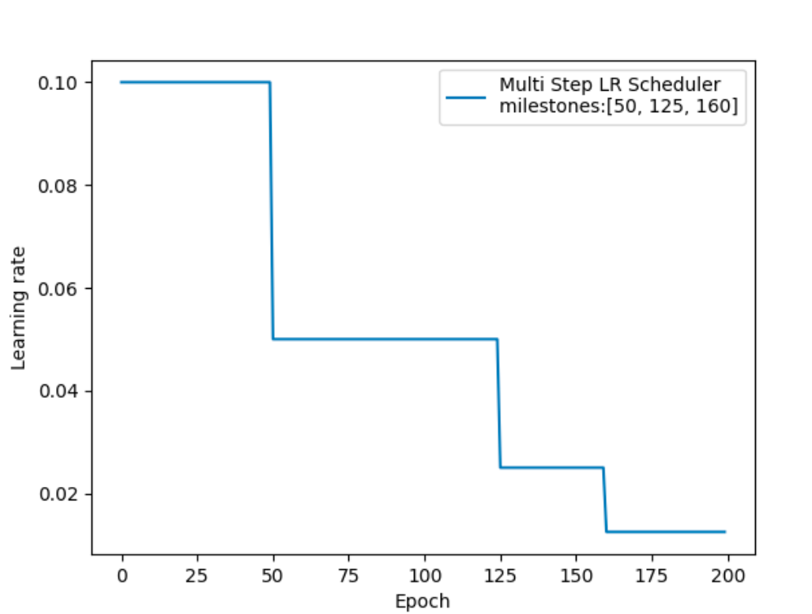
2.3 按指数衰减-调整学习率¶
'''
lr_scheduler.ExponentialLR(optimizer, gamma, last_epoch=-1)
功能：按指数衰减-调整学习率
主要参数：
gamma：指数的底
调整方式
lr= lr∗ gamma^epoch
'''
def dm05_test_ExponentialLR():
torch.manual_seed(1)
LR = 0.1
iteration = 10
max_epoch = 200
weights = torch.randn((1), requires_grad=True)
target = torch.zeros((1))
optimizer = optim.SGD([weights], lr=LR, momentum=0.9)
gamma = 0.95
scheduler_lr = optim.lr_scheduler.ExponentialLR(optimizer, gamma=gamma)
lr_list, epoch_list = list(), list()
for epoch in range(max_epoch):
lr_list.append(scheduler_lr.get_last_lr())
epoch_list.append(epoch)
for i in range(iteration):
loss = torch.pow((weights - target), 2)
loss.backward()
optimizer.step()
optimizer.zero_grad()
scheduler_lr.step()
plt.plot(epoch_list, lr_list, label="Exponential LR Scheduler\ngamma:{}".format(gamma))
plt.xlabel("Epoch")
plt.ylabel("Learning rate")
plt.legend()
plt.show()
效果如下：
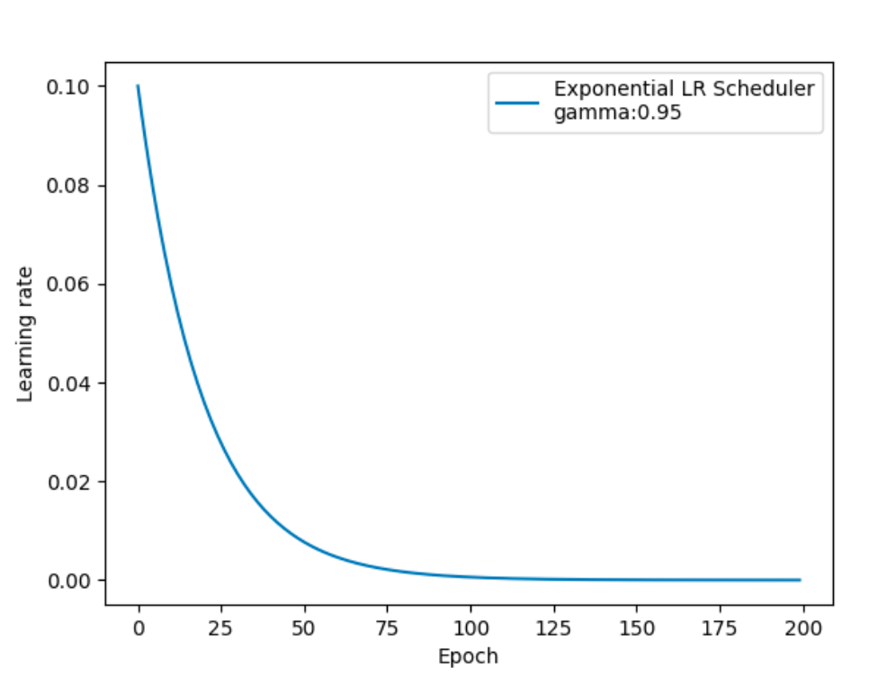